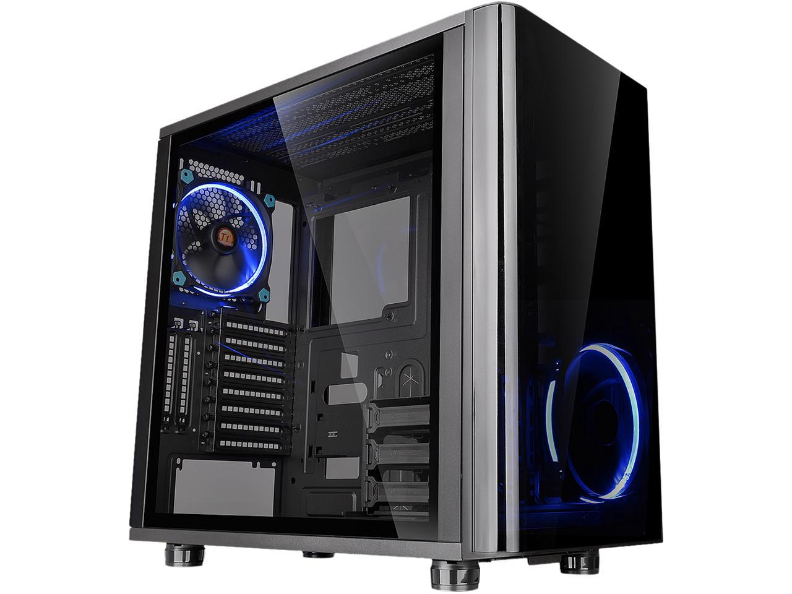

Peripheral
A peripheral device is generally defined as any auxiliary device such as a computer mouse or keyboard that connects to and works with the computer in some way. Other examples of peripherals are image scanners, tape drives, microphones, loudspeakers, webcams, and digital cameras.
Multimedia
Multimedia is content that uses a combination of different content forms such as text, audio, images, animations, video and interactive content
Storage
Computer data storage, often called storage or memory, is a technology consisting of computer components and recording media that are used to retain digital data.

PC
Personal computer (PC) is a multi-purpose computer whose size, capabilities, and price make it feasible for individual use. PCs are intended to be operated directly by an end user, rather than by a computer expert or technician.